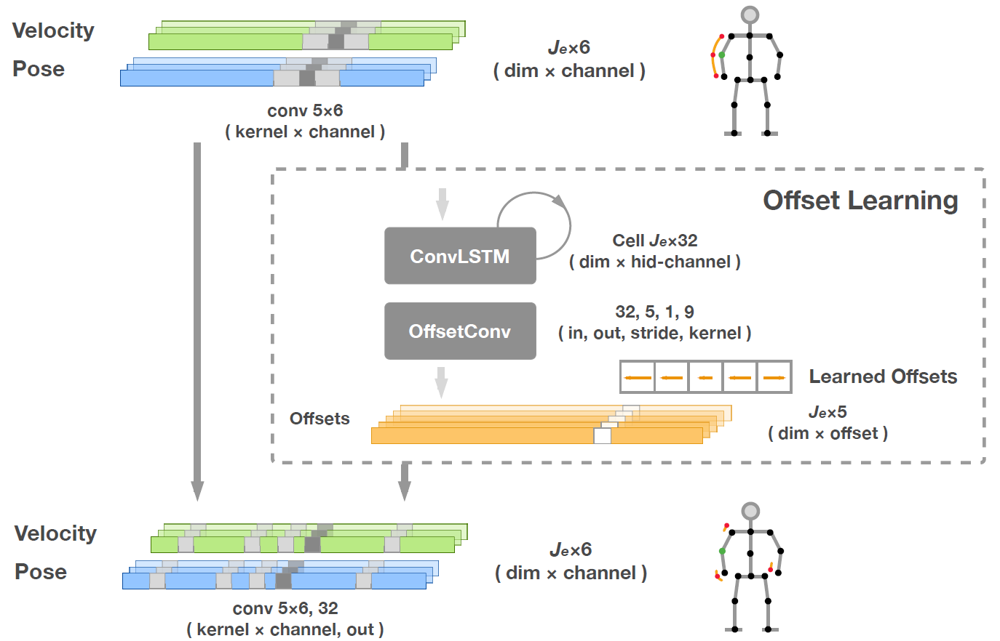
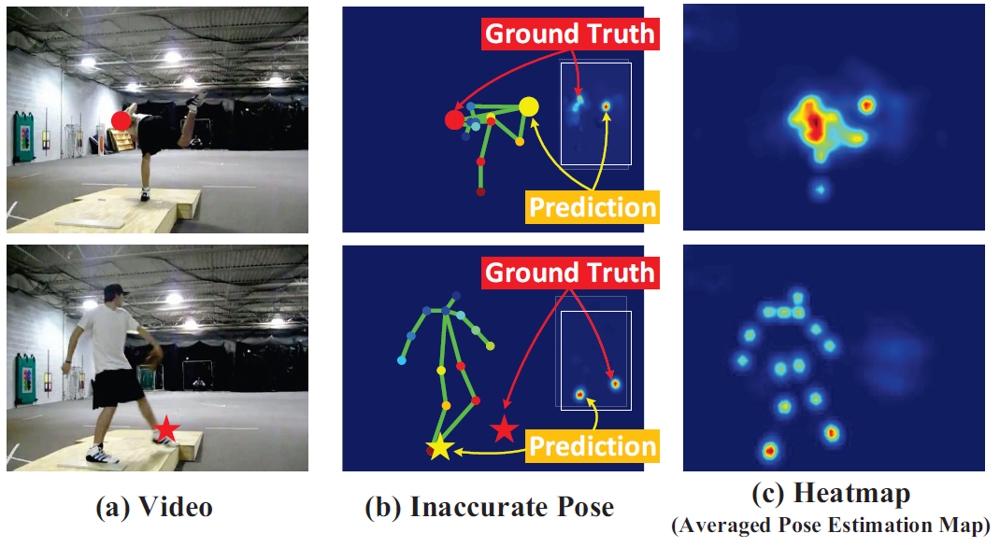
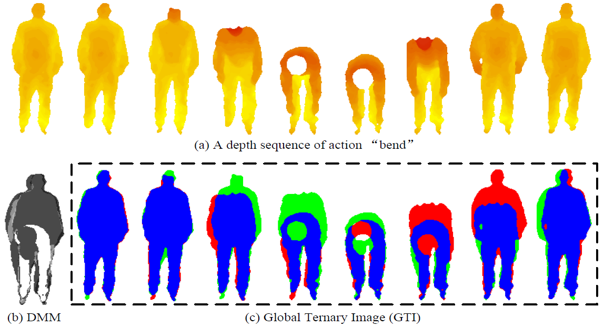
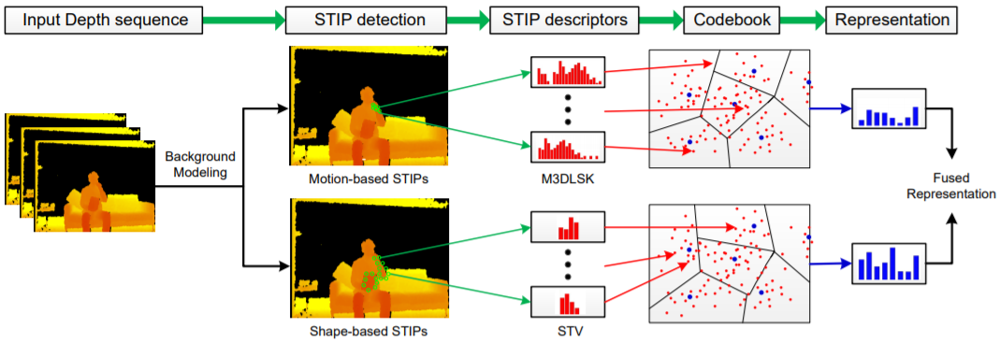
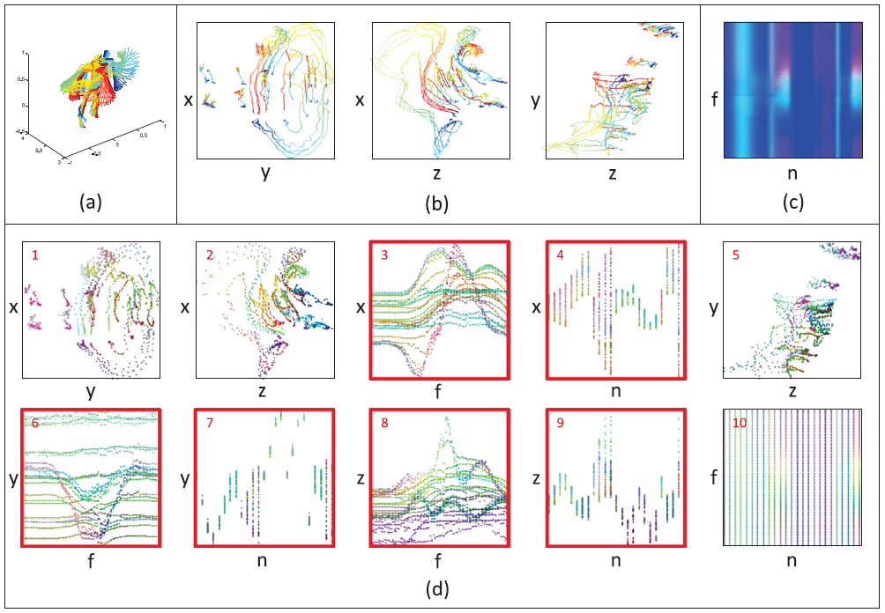
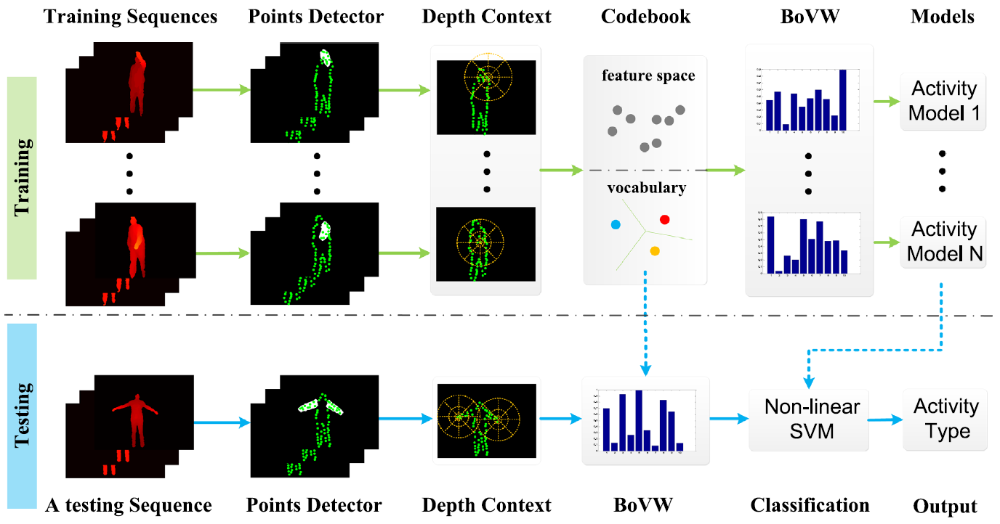
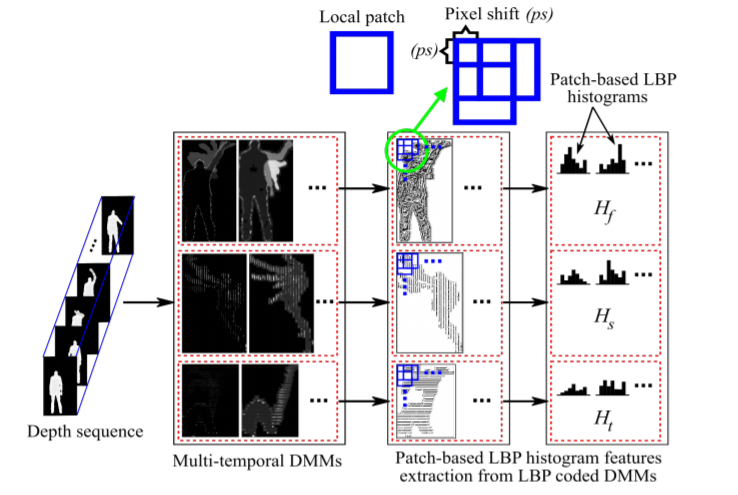

Mengyuan Liu 刘梦源
nkliuyifang@gmail.com
Links Research Interestshuman action recognition/detection, computer vision, deep learning
nkliuyifang@gmail.com
Links Research Interestshuman action recognition/detection, computer vision, deep learning
|  | Deformable Pose Traversal Convolution for 3D Action and Gesture Recognition Junwu Weng, Mengyuan Liu, Xudong Jiang, Junsong Yuan Europen Conference on Computer Vision (ECCV), 2018 Paper |
|  | Recognizing Human Actions as the Evolution of Pose Estimation Maps Mengyuan Liu, Junsong Yuan International Conference on Computer Vision and Pattern Recognition (CVPR), 2018 Paper |
|  | 3D Action Recognition using Multi-Scale Energy-based Global Ternary Image Mengyuan Liu, Hong Liu, Chen Chen IEEE Transactions on Circuits and Systems for Video Technology (T-CSVT), 2017 Paper |
|  | Robust 3D Action Recognition through Sampling Local Appearances and Global Distributions Mengyuan Liu, Hong Liu, Chen Chen IEEE Transactions on Multimedia (T-MM), 2017 Paper |
|  | Enhanced Skeleton Visualization for View Invariant Human Action Recognition Mengyuan Liu, Hong Liu, Chen Chen Pattern Recognition (PR), 2017 Paper |
|  | Depth Context: A New Descriptor for Human Activity Recognition by using Sole Depth Sequences Mengyuan Liu, Hong Liu Neurocomputing, 2016 Paper |
|  | Depth Context: A New Descriptor for Human Activity Recognition by using Sole Depth Sequences Chen Chen*, Mengyuan Liu*, Baochang Zhang, Jungong Han, Junjun Jiang, and Hong Liu International Joint Conference on Artificial Intelligence (IJCAI), 2016 Paper |